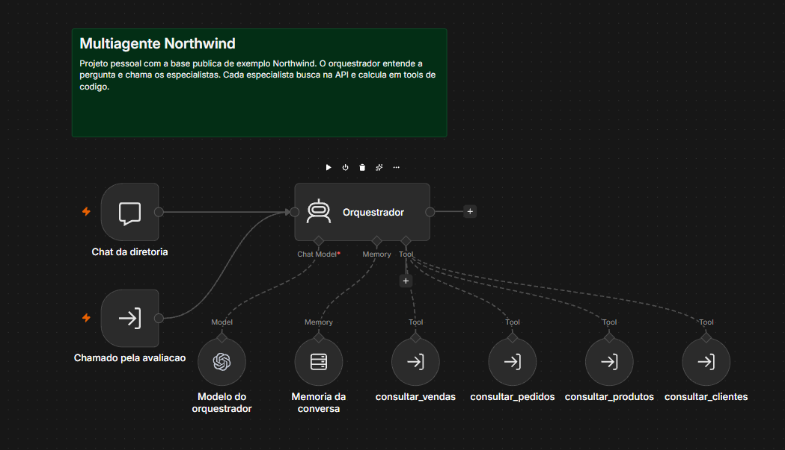

Projeto em destaque
Assistente de gestão multiagente
Projeto pessoal, com apoio de IA e dados públicos de exemplo
Um chat responde perguntas sobre vendas, pedidos, produtos e clientes da Northwind. Um orquestrador chama quatro especialistas, e as contas ficam em 13 tools de código.
Em cinco rodadas de 30 perguntas, os acertos foram 29, 28, 29, 29 e 30. Só uma rodada ficou sem erro.

Outros trabalhos
Agente de IA no WhatsApp
Experiência profissional, código privado
Desenvolvi de ponta a ponta um agente multiagente para donos de ótica consultarem vendas, ordens de serviço, financeiro e estoque. Reviso conversas reais e confiro as respostas no banco com SQL.
BI de uma loja de seminovos
Freelance, código privado
Trato os dados em Python e pandas e mantenho o modelo em Power BI, com DRE, fluxo de caixa, vendas, leads e estoque. Confiro o fechamento mensal com o sistema de origem.
Análise de saúde mental com SQL
Projeto de estudo
Consulta em PostgreSQL baseada em um caso do DataCamp. Ver no GitHub